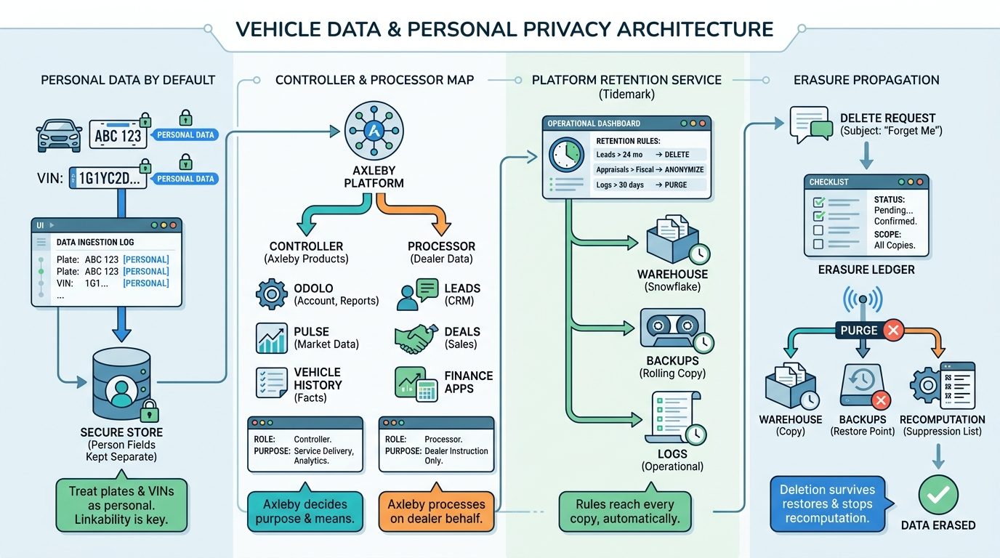

Part VII — OPERATIONS: Running the Platform
Plates Are Personal: Privacy, Retention and Data Subject Rights

Image generated by Google Gemini (gemini-3-pro-image-preview)
Part VII — OPERATIONS: Running the Platform

Image generated by Google Gemini (gemini-3-pro-image-preview)